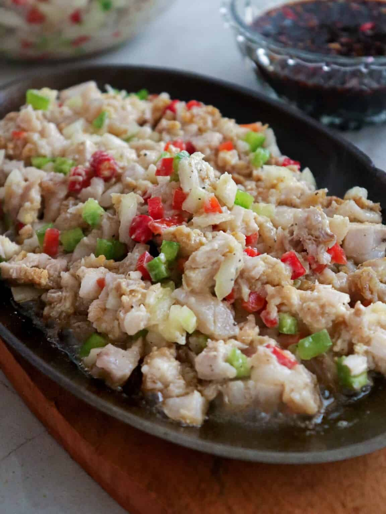

Home
Crispy Sisig Recipe

Description
Crispy Sisig is an excellent use for leftover lechon kawali. It's a delicious medley of savory, spicy, and crunchy ingredients that make a tasty appetizer or main dish.
Ingredients
- 4 cups lechon kawali, chopped
- 1 medium red bell pepper, seeded, cored and diced
- 1 medium green bell pepper, seeded, cored and diced
- 1 onion, peeled and diced
- 5 Thai chili peppers, minced
- ½ cup calamansi juice
- salt and pepper to taste
Steps
- In a large bowl, combine lechon kawali, bell peppers, onions, and chili peppers.
- Add calamansi juice and season with salt and pepper to taste.
- Gently toss together to evenly distribute. Serve immediately.